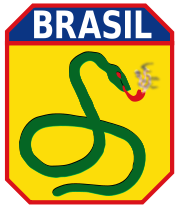
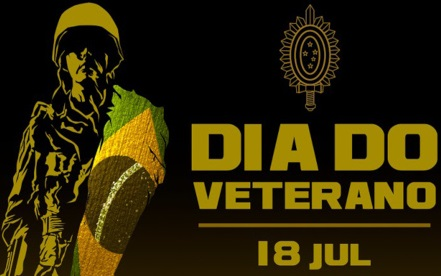

BRIGOLINI, Vinícius. Dia do Veterano do Exército Brasileiro.
Https://militares.estrategia.com/portal/, 18 jul. 2022.
Disponível em: https://militares.estrategia.com/portal/mundo-militar/datas-comemorativas/dia-do-veterano-do-exercito-brasileiro/. Acesso em: 12 out. 2022.
"5 fatos para saber sobre o Dia dos Veteranos". Defense.gov. Departamento de Defesa dos EUA.
Recuperado em 4 de outubro de 2019.
WIKIPEDIA. Veterans Day. In: WIKIPEDIA. Veterans Day.
Https://en.wikipedia.org/wiki/Main_Page, 5 out. 2022.
Disponível em: https://en.wikipedia.org/wiki/Veterans_Day. Acesso em: 12 out. 2022.
Perguntas Frequentes do Dia dos Veteranos, Escritório de Relações Públicas, Departamento de Assuntos dos Veteranos dos EUA. Atualizado em 20 de julho de 2015.
Recuperado em 8 de novembro de 2015.- Carter, Julie (novembro de 2003). "Onde começou o Dia dos Veteranos". Revista VFW. Veteranos de Guerras Estrangeiras dos Estados Unidos. Arquivado do original em 14 de julho de 2012.
- AFINAL, QUAL A ORIGEM DA EXPRESSÃO "A COBRA ESTÁ FUMANDO"?: Descubra qual foi o motivo da criação da frase que até hoje permanece no vocabulário dos brasileiros. Https://aventurasnahistoria.uol.com.br/noticias/almanaque/historia-segunda-guerra-origem-da-expresao-cobra-esta-fumando.phtml, 16 jun. 2020. Disponível em: https://aventurasnahistoria.uol.com.br/noticias/almanaque/historia-segunda-guerra-origem-da-expresao-cobra-esta-fumando.phtml. Acesso em: 27 out. 2022.
- 
A COBRA vai fumar. pt.wikipedia.org/wiki/A_cobra_vai_fumar#: 28 maio 2022.
Disponível em: pt.wikipedia.org/wiki/A_cobra_vai_fumar#: Acesso em: 27 out. 2022. -  CCOMSEX. DIA DO VETERANO – 18 DE JULHO. [S. l.], 14 jul. 2022. Disponível em: https://www.eb.mil.br/web/noticias/noticiario-do-exercito/-/asset_publisher/znUQcGfQ6N3x/content/id/15810026. Acesso em: 27 out. 2022.
- VILLA, Marco. 1932 imagens de uma revolução. [S. l.]: Imprensa oficial, 2008. 208 p. ISBN 978857060695.
-
TEIXEIRA, Raquel. Dia do Orgulho Autista é comemorado nesta sexta-feira. Https://www12.senado.leg.br/radio, 16 jun. 2021.
Disponível em: https://www12.senado.leg.br/radio/1/noticia/2021/06/16/dia-do-orgulho-autista-e-comemorado-nesta-sexta-feira.
Acesso em: 1 nov. 2022. 
NATIONAL WOMEN'S HISTORY MUSEUM. Celebrating Veterans Day.
Https://www.womenshistory.org/articles/celebrating-veterans-day. Disponível em: https://www.womenshistory.org/articles/celebrating-veterans-day. Acesso em: 12 out. 2022.
LIBRARY OF CONGRESS. Veterans History Project.
Https://www.loc.gov/vets/stories/. Disponível em: https://www.loc.gov/vets/stories/. Acesso em: 12 out. 2022.
USO. Celebrating Veterans Day at Home.
Https://www.uso.org/stories/2422-celebrating-veterans-day-at-home. Disponível em: https://www.uso.org/stories/2422-celebrating-veterans-day-at-home. Acesso em: 12 out. 2022.
ENCYCLOPÆDIA BRITANNICA. Veterans Day.
Https://www.britannica.com/topic/Veterans-Day. Disponível em: https://www.britannica.com/topic/Veterans-Day. Acesso em: 12 out. 2022.
NATIONAL WWII MUSEUM. The History of Veterans Day.
Https://www.nationalww2museum.org/war/articles/history-veterans-day. Disponível em: https://www.nationalww2museum.org/war/articles/history-veterans-day. Acesso em: 12 out. 2022.
MILITARY.COM. Veterans Day.
Https://www.military.com/veterans-day. Disponível em: https://www.military.com/veterans-day. Acesso em: 12 out. 2022.
MILITARY.COM. 63rd Infantry Division.
Https://www.military.com/history/63rd-infantry-division. Disponível em: https://www.military.com/history/63rd-infantry-division. Acesso em: 12 out. 2022.
WORLD WAR II HISTORY. 63rd Infantry Division in World War II.
Https://www.worldwar2history.info/Army/63rd.html. Disponível em: https://www.worldwar2history.info/Army/63rd.html. Acesso em: 12 out. 2022.
GOOGLE MAPS. Interactive Map of 63rd Infantry Division Locations.
Https://www.google.com/maps/d/viewer?mid=1Z1Z5CnZZk2Z4kz3L9WJ8RY2Vd6E&hl=en_US&ll=37.09024%2C-95.712891&z=4. Disponível em: https://www.google.com/maps/d/viewer?mid=1Z1Z5CnZZk2Z4kz3L9WJ8RY2Vd6E&hl=en_US&ll=37.09024%2C-95.712891&z=4. Acesso em: 12 out. 2022.
HISTORYNET. Comprehensive History of the 63rd Infantry Division.
Https://www.historynet.com/63rd-infantry-division/. Disponível em: https://www.historynet.com/63rd-infantry-division/. Acesso em: 12 out. 2022.
NATIONAL GUARD. 63rd Infantry Division Overview.
Https://www.nationalguard.com/63rd-infantry-division. Disponível em: https://www.nationalguard.com/63rd-infantry-division. Acesso em: 12 out. 2022.
MILITARY TIMES. Remembering the 63rd Infantry Division.
Https://www.militarytimes.com/veterans/2022/11/10/remembering-the-63rd-infantry-division/. Disponível em: https://www.militarytimes.com/veterans/2022/11/10/remembering-the-63rd-infantry-division/. Acesso em: 12 out. 2022.
ENCYCLOPÆDIA BRITANNICA. 63rd Infantry Division.
Https://www.britannica.com/topic/63rd-infantry-division. Disponível em: https://www.britannica.com/topic/63rd-infantry-division. Acesso em: 12 out. 2022.
ARMY HISTORY. 63rd Infantry Division.
Https://www.armyhistory.org/63rd-infantry-division/. Disponível em: https://www.armyhistory.org/63rd-infantry-division/. Acesso em: 12 out. 2022.
MUSEUM OF MILITARY HISTORY. 63rd Infantry Division.
Https://www.museumofmilitaryhistory.org/63rd-infantry-division. Disponível em: https://www.museumofmilitaryhistory.org/63rd-infantry-division. Acesso em: 12 out. 2022.
DEPARTMENT OF VETERANS AFFAIRS. Veterans Day Resources.
Https://www.va.gov/opa/vetsday/. Disponível em: https://www.va.gov/opa/vetsday/. Acesso em: 12 out. 2022.
VETERANS OF FOREIGN WARS. VFW Day Celebrations.
Https://www.vfw.org/community/community-initiatives/vfw-day. Disponível em: https://www.vfw.org/community/community-initiatives/vfw-day. Acesso em: 12 out. 2022.
DISABLED AMERICAN VETERANS. Veterans Day Resources.
Https://www.dav.org/veterans/resources/veterans-day/. Disponível em: https://www.dav.org/veterans/resources/veterans-day/. Acesso em: 12 out. 2022.
THE AMERICAN LEGION. Veterans Day Information.
Https://www.legion.org/veteransday. Disponível em: https://www.legion.org/veteransday. Acesso em: 12 out. 2022.
HISTORY CHANNEL. Veterans Day Facts.
Https://www.history.com/topics/holidays/veterans-day-facts. Disponível em: https://www.history.com/topics/holidays/veterans-day-facts. Acesso em: 12 out. 2022.
DEPARTMENT OF DEFENSE. Veterans Day Spotlight.
Https://www.defense.gov/Spotlights/Veterans-Day/. Disponível em: https://www.defense.gov/Spotlights/Veterans-Day/. Acesso em: 12 out. 2022.
NATIONAL PARK SERVICE. Veterans Day Celebrations.
Https://www.nps.gov/subjects/npscelebrates/veterans-day.htm. Disponível em: https://www.nps.gov/subjects/npscelebrates/veterans-day.htm. Acesso em: 12 out. 2022.
PBS. Veterans Day Stories.
Https://www.pbs.org/articles/veterans-day/. Disponível em: https://www.pbs.org/articles/veterans-day/. Acesso em: 12 out. 2022.
CNN. Veterans Stories and Features.
Https://www.cnn.com/specials/us/veterans. Disponível em: https://www.cnn.com/specials/us/veterans. Acesso em: 12 out. 2022.
NEW YORK TIMES. Veterans Spotlight.
Https://www.nytimes.com/spotlight/veterans. Disponível em: https://www.nytimes.com/spotlight/veterans. Acesso em: 12 out. 2022.
WASHINGTON POST. Veterans Day Coverage.
Https://www.washingtonpost.com/veterans-day/. Disponível em: https://www.washingtonpost.com/veterans-day/. Acesso em: 12 out. 2022.
AARP. Voices of Veterans.
Https://www.aarp.org/home-family/voices/veterans/. Disponível em: https://www.aarp.org/home-family/voices/veterans/. Acesso em: 12 out. 2022.
C-SPAN. Veterans Day Programming.
Https://www.c-span.org/series/?veteransday. Disponível em: https://www.c-span.org/series/?veteransday. Acesso em: 12 out. 2022.
AMERICAN RED CROSS. Services for Veterans.
Https://www.redcross.org/get-help/military-families/veteran-services.html. Disponível em: https://www.redcross.org/get-help/military-families/veteran-services.html. Acesso em: 12 out. 2022.
NATIONAL VETERANS DAY. Official Veterans Day Site.
Https://www.nationalveteransday.org/. Disponível em: https://www.nationalveteransday.org/. Acesso em: 12 out. 2022.
NAVAL HISTORY AND HERITAGE COMMAND. Veterans Day Toolkit.
Https://www.history.navy.mil/browse-by-topic/commemorations-toolkits/veterans-day.html. Disponível em: https://www.history.navy.mil/browse-by-topic/commemorations-toolkits/veterans-day.html. Acesso em: 12 out. 2022.
U.S. AIR FORCE. Veterans Day Fact Sheet.
Https://www.af.mil/About-Us/Fact-Sheets/Display/Article/104478/veterans-day/. Disponível em: https://www.af.mil/About-Us/Fact-Sheets/Display/Article/104478/veterans-day/. Acesso em: 12 out. 2022.

63rd Infantry Valor Legacy